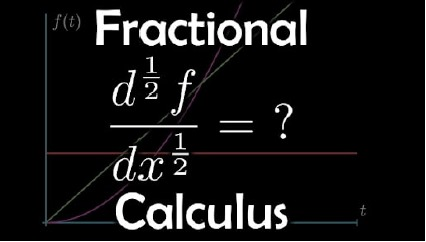

1.1 Introduction
Math is used all around us from the most obvious to the most peculiar things. This pushes us to think about what can be achieved by implementing maths. This is our attempt at gauging opportunities and problems that can be solved with the help of maths. The field of maths we chose for our project is fractional calculus. This maths topic is growing widely in many different applications in physics, Economics, Finance, and many more. It generalizes the operations performed using differentiation and integration to non-integer. Non-integer orders are often used in fractional calculus which are real numbers that is not an integer. We must have learned in high school about differentiation and integration where we try to find out the derivative or integration of some function by applying basic differentiation and integration properties. We know that the first derivative of the function indicates the slope and the second derivative indicates concavity. But, have you ever wondered if we can also find the half derivative or half integral of any function?
1.2 History
The topic of our project is Fractional Calculus. It is more than 300 years old. Fractional derivative first appeared in a letter written by Gottfried Wihelm Leibniz toGuillaume de L’Hopital where the meaning of half-derivative has been raised. 30th September 1965, was the date when fractional calculus was born. In the 19th century, the theory of fractional calculus was the great fact of interest among the great minds which included Euler, Laplace, Fourier, Lacroix, Abel, Reimann, and Lioville. In 1819, Lacroix in one of his books, he gave the correct answer to the question which Leibniz mentioned in his letter where he found the correct answer of half-derivative of x is 2\( \sqrt{\frac{x}{\pi}} \) During the 19th Century, fractional calculus had further improvement with Riemann introducing many more definitions of fractional derivatives and integrals. An English physicist Oliver Heaviside also made many contributions to some practical applications of fractional calculus. During the 20th century, it became a tool that can be used for modeling complex phenomena in various fields.
1.3 Current Affairs
As we all know maths continues with every passing day. In recent times with the advent of new technology fractional calculus has found its place in implementation.
• visco-elastic diffusion in complex liquids(Langevin fractional equation)
• Ubiquitous fractional order memory system
• Image Processing
• Magnetic Resonance Imaging(MRI)
• Machine Learning
• Tautochrone Curve Further down the document we are going further
focus on the Tautochrone curve and its applications. Fractional calculus will possibly see a rise in its learners because of its vast applications especially those in machine learning would attract significant interest in the subject.
Fractional Differentiation
In high school, we studied differentiation where we used to find the derivative of continuous functions. What we used to do was to plot the curve of the slope of that function at every single point. Now, let’s consider finding a half derivative of a function like:- $$x^3$$, sinx, etc... Such type of differentiation is called fractional differentiation.
CAUCHY’S FORMULA FOR REPEATED INTEGRATION
$$n \int_ f($$a^t$$) \, dx^n = \frac{1}{(n-1)!} \int_{a}^{t} (t - x)^{n-1} f(x) \, dx$$